This project has received funding from the European Union’s Horizon 2020 Research
and Innovation programme under grant agreement number No. 101000309.
-
Coordinator: Antton Alberdi (UCPH)
Data and privacy policy Contact: 3d-omics@sund.ku.dk
Connecting complementary expertise to make microbial ecosystem research more coherent, useful and widely applicable.
Shared research landscape
3D'omics reinforced collaboration with initiatives in related domains to promote coherence and applicability of research on microbial ecosystems.
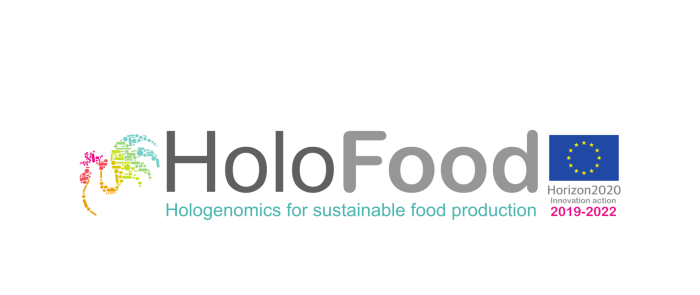
HoloFood is a 'hologenomic' approach that will improve the efficiency of food production systems by understanding the biomolecular and physiological processes affected by incorporating feed additives and
novel sustainable feeds in farmed animals. Specifically, HoloFood is a framework that integrates a suite of recent analytical and technological developments, that is applicable to any major animal food production system, spanning the full production line.
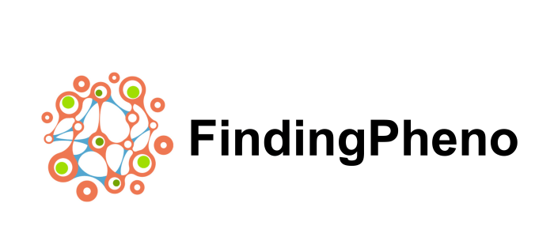
FindingPheno is creating an integrated computational framework for hologenomic big data, providing the tools to better understand how host-microbiome interactions can affect growth and other outcomes. The tools created in FindingPheno are expected to significantly improve how we understand and utilise the functions provided by microbiomes in combating human diseases as well as the way we produce sustainable food for future generations.
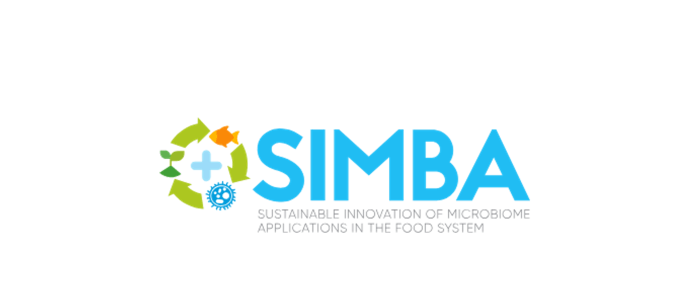
SIMBA (Sustainable Innovation of Microbiome Applications in Food System) is a European innovation project, funded through Horizon 2020, which provides a holistic and innovative approach to the development of microbial solutions to increase food and nutrition security, in particular focusing on the identification of viable land and aquatic microbiomes that can assist in the sustainability of European agro- and aquaculture.
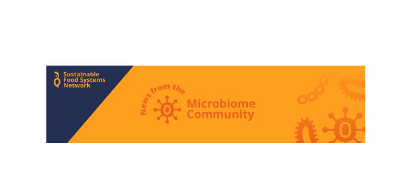
The Sustainable Food Systems Network (SFSN) is a virtual platform where actors interested in the transformation of European food systems can connect, interact and inspire each other. SFSN was initiated in 2020 by the EU-funded project FIT4FOOD2030, which advocates for food-system transformation through responsible research and innovation. SFSN is for anyone who wants to stay up to date with activities aimed at creating resilient and sustainable food systems with well-integrated responsible research and innovation practices.
The 3D'omics Project Manager was an SFSN Ambassador, bridging the projects and facilitating information flow.
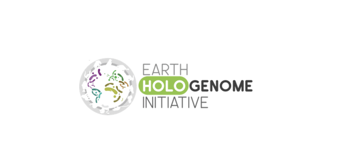
The Earth HoloGenome Initiative (EHI) aims to promote, facilitate, coordinate and standardise hologenomic research on animal-microbiota systems worldwide. The interaction between animals and gut microorganisms associated with them impacts a wide range of biological processes of hosts, microbes and environment. Current technology enables precise characterisation of both host genomes and microbial metagenomes, which opens a wealth of possibilities to study how host-microbiota interactions affect key processes such as speciation, adaptation to climate change, disease transmission.
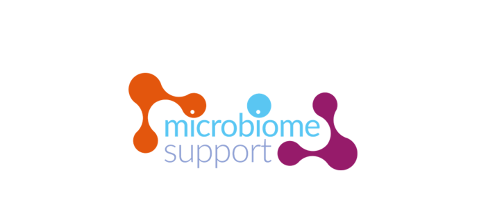
The MicrobiomeSupport project contributes to strengthening a sustainable European bioeconomy and supports the European food system transformation in line with the FOOD 2030 policy initiative. Specifically, MicrobiomeSupport assesses microbiome Research and Innovation activities on regional, national and international levels as well as its challenges and opportunities; integrates experts from all parts of the food system microbiome and funding authorities worldwide; and supports the European Commission to implement the International Bioeconomy Forum working group on ‘Food Systems Microbiome’.
The overall objective of Re-Livestock is to understand and mobilize adoption of innovative practices, applied cross-scale, to reduce the greenhouse gas emissions of livestock farming and to increase the capacity for dealing with climate change impacts, in order to ultimately increase the overall resilience of the livestock sector.
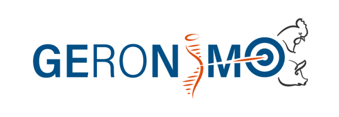
GEroNIMO works on chicken and pig to provide breeders with new knowledge and tools to promote innovative genome- and epigenome enabled selection methods for traits related to production (quantity and quality), efficiency, productive longevity, fertility, resilience and welfare. GEroNIMO also proposes demand-driven innovation employing a multiactor approach through the involvement of breeders, professional associations of animal production, and scientists, engaged from the planning phase to the dissemination of results over Europe.
RUMIGEN aims at improving bovine genomic selection using of 3 strategies:
1) The genetic level aspires to enlarge the selection criteria in order to increase animal resilience towards climatic changes. 2) The genomic editing level will explore domains into which genome editing might be useful for Ruminants and will assess its potential impact and its efficiency compared to other classical breeding schemes. 3) The epigenetic level is aiming at developing an microarray, determining methylation profile of DNA in various tissues and breeding conditions.
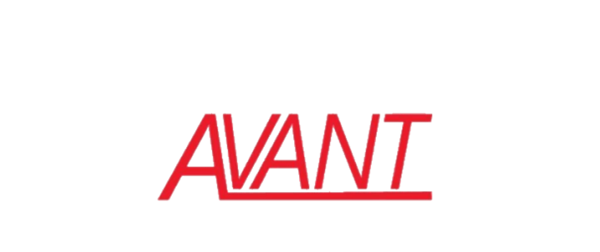
AVANT is a multi-actor inter-sectorial project aimed at developing alternatives to antimicrobials for the management of bacterial infections in pigs, especially diarrhoea during the weaning period, as the major indication for antimicrobial use in livestock in Europe. During pre-clinical studies, efficacy, toxicity, and mode of action of these interventions is tested, and their dosage and formulation optimized. The results will be used to select three interventions for large-scale farm trials, assessing clinical efficacy and impact on antimicrobial use.
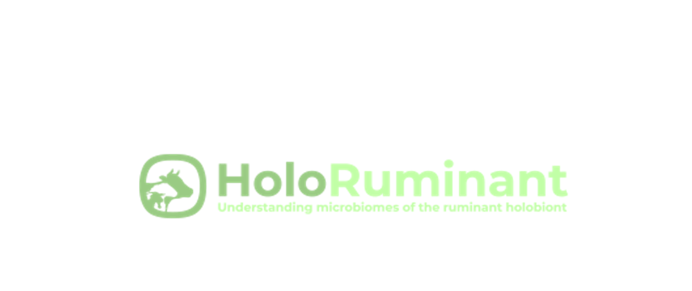
HoloRuminant is a multi-actor project aiming to elucidate the role of ruminant-associated microbiomes and their interplay with the host animal in early life and throughout fundamental life events (e.g. weaning, feed transitions and lactation) that are known to affect health, welfare and environmental efficiency in ruminant production systems. HoloRuminant will use a holistic multi-omics approach to characterize the establishment and dynamics of microbiomes. The 3D'omics consortium joined the HoloRuminant joint dissemination network and co-created the EcoGen Cluster.
Industry engagement
3D'omics also collaborated with companies developing the tools and models that support translational research.
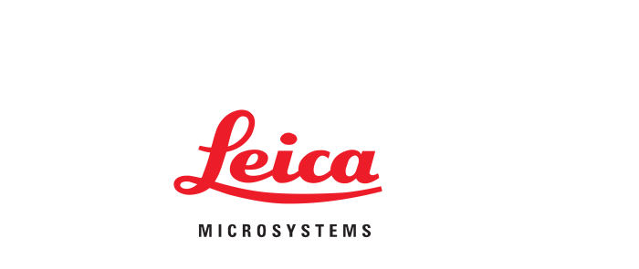
Technology partner
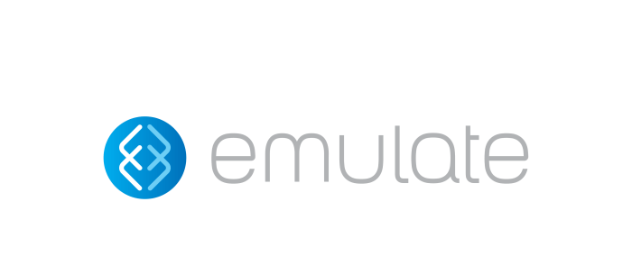
Technology partner
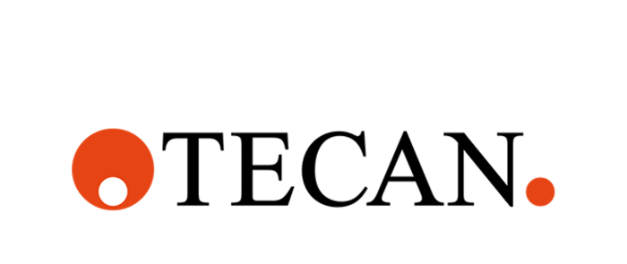
Technology partner
This project has received funding from the European Union’s Horizon 2020 Research
and Innovation programme under grant agreement number No. 101000309.
-
Coordinator: Antton Alberdi (UCPH)
Data and privacy policy Contact: 3d-omics@sund.ku.dk